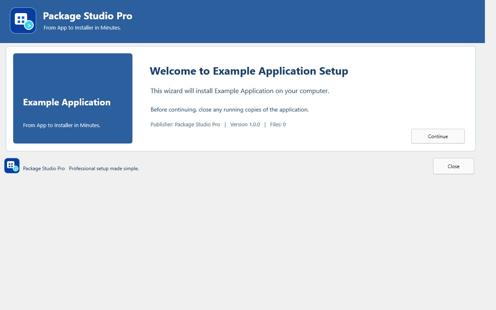

Running the Exported Installer
After export, open the build output folder and run the generated setup executable, This is an example screen:

Click continue to proceed with the installation by verifying all parameters are what you want and accepting the EULA. If the EULA is not accepted, the buttons will remain grayed out and you cannot proceed and can only close the install.